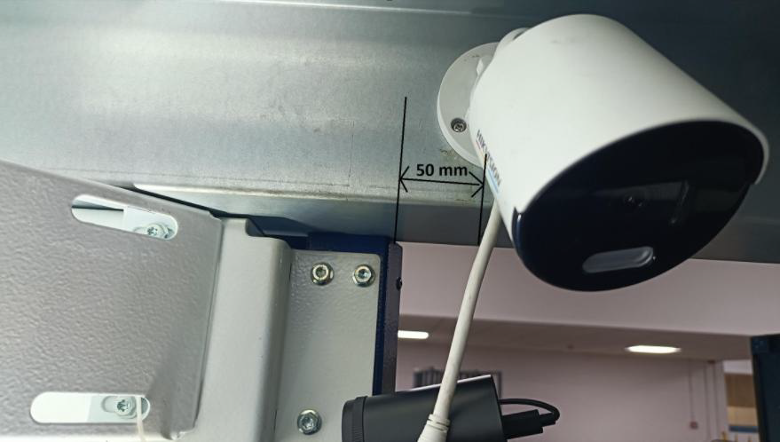
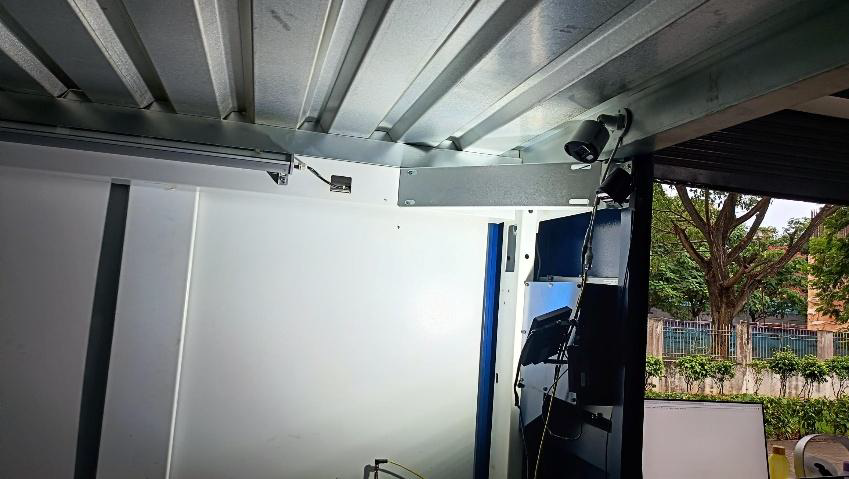
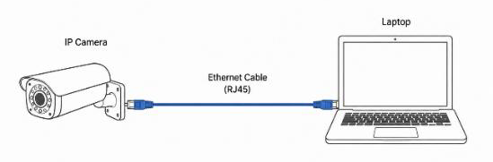
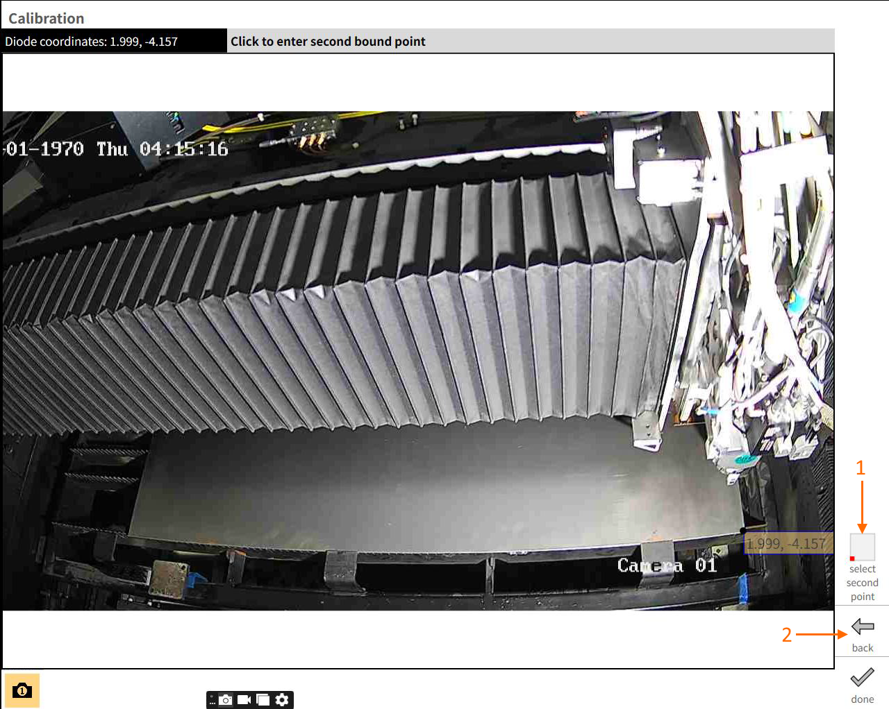
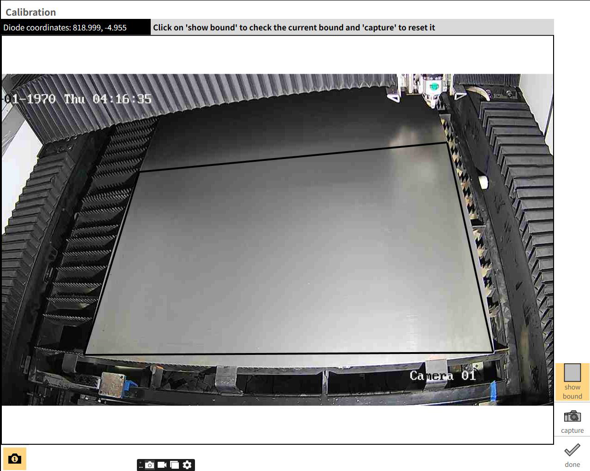
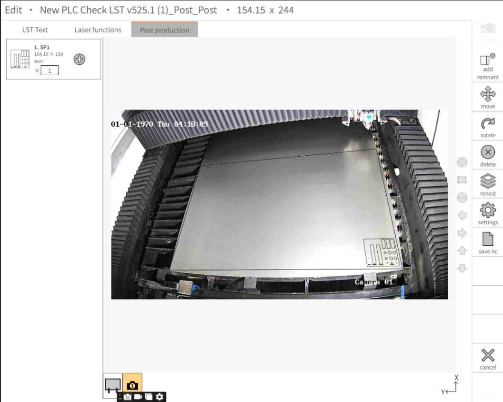

SmartRemnant
Die SmartRemnant-Funktion verwendet eine im Maschineninneren montierte Netzwerkkamera, um eine Live-Ansicht des Blechs auf der Palette bereitzustellen. Nach der Kalibrierung der Kamera können Sie Teile direkt auf dem Kamerabild in der Nachbearbeitung platzieren, und Vulcan erfasst automatisch den Arbeitsversatz — eine manuelle Versatz-Eingabe ist nicht mehr erforderlich.
Kameramodell und Spezifikationen
Modellname: Hikvision DS-2CD1027G2-L
| Spezifikation | Wert |
|---|---|
Kamera |
|
Bildsensor |
1/2.8" Progressive Scan CMOS |
Max. Auflösung |
1920 x 1080 |
Min. Beleuchtung |
Farbe: 0,001 Lux @ (F1.0, AGC EIN), 0 Lux mit Licht |
Verschlusszeit |
1/3 s bis 1/100.000 s |
Tag & Nacht |
24/7-Farbbildgebung |
Winkelverstellung |
Schwenken: 0° bis 360°, Neigen: 0° bis 90°, Drehen: 0° bis 360° |
Objektiv |
|
Objektivtyp |
Festbrennweite, 2,8 und 4 mm optional |
Brennweite & FOV |
2,8 mm, horizontales FOV: 106°, vertikales FOV: 57°, diagonales FOV: 126° |
Objektivanschluss |
M12 |
Blendentyp |
Fest |
Blende |
F1.0 |
Schärfentiefe |
2,8 mm: 1,5 m bis ∞ |
DORI |
|
DORI |
2,8 mm, D: 44 m, O: 17 m, R: 8 m, I: 4 m |
Beleuchtung |
|
Zusatzlichttyp |
Weißlicht |
Zusatzlichtreichweite |
Bis zu 30 m |
Intelligentes Zusatzlicht |
Ja |
Video |
|
Hauptstream |
50 Hz: 25 fps (1920 x 1080, 1280 x 720) |
Substream |
50 Hz: 25 fps (640 x 480, 640 x 360) |
Videokomprimierung |
Hauptstream: H.265+/H.265/H.264+/H.264 |
Videobitrate |
32 Kbps bis 8 Mbps |
H.264-Typ |
Baseline Profile, Main Profile, High Profile |
H.265-Typ |
Main Profile |
Bitratensteuerung |
CBR, VBR |
Region of Interest (ROI) |
1 fester Bereich für den Hauptstream |
Positionierung der Kamera in der Maschine
Die Kamera ist im Maschineninneren montiert, an der oberen rechten Innenseite der Tür, bei 50 mm. Sie bietet eine Ansicht aus dem Inneren der Maschine. Der Blickwinkel ist geneigt, um die Platzierung der halben Blechfläche abzudecken.


Anschließen einer Netzwerkkamera in Vulcan
Um die Kommunikation zwischen der Kamera und Vulcan herzustellen, muss die IP-Adresse der Kamera im gleichen Netzwerkbereich wie die IP-Adresse der Maschine konfiguriert werden.
Überprüfen der Maschinen-IP-Adresse
-
Wechseln Sie in den Modus Service User Active:
-
Öffnen Sie Einstellungen
-
Wählen Sie Benutzer wechseln
-
Ändern Sie die Benutzergruppe auf Service User Active
-
-
Öffnen Sie die Eingabeaufforderung:
-
Gehen Sie zu Windows-Tools
-
Wählen Sie Eingabeaufforderung
-
-
Geben Sie
ipconfigein und drücken Sie Enter. Das System zeigt die Netzwerkdetails der Maschine an, einschließlich der im lokalen Netzwerk verbundenen IP-Adresse.

Konfigurieren der Kamera-IP-Adresse
Die Kamera muss mit einer IP-Adresse im gleichen Bereich wie die Maschine konfiguriert werden.
Beispiel:
-
Maschinen-IP:
192.168.1.176 -
Kamera-IP:
192.168.1.xxx
| Stellen Sie sicher, dass die Kamera-IP-Adresse eindeutig ist und nicht bereits einem anderen Gerät zugewiesen wurde. Wenden Sie sich an das IT-Team, um die Eindeutigkeit zu bestätigen. |
Standardmäßig verwendet die Hikvision DS-2CD1027G2-L Kamera die IP
192.168.1.64, die bereits im korrekten Bereich liegt. Eine manuelle
Konfiguration ist nicht erforderlich, es sei denn, die IP-Adresse weicht ab.
|
Konfigurieren der System-IP-Adresse (falls erforderlich)
Wenn die Kamera eine andere IP-Adresse hat:
-
Verbinden Sie die Kamera direkt über Ethernet mit einem System.
-
Verwenden Sie die im Kamerahandbuch angegebene Standard-IP-Adresse.
-
Konfigurieren Sie die System-IP im gleichen Bereich:
-
IP-Adresse:
192.168.1.176 -
Subnetzmaske:
255.255.255.0 -
Standard-Gateway: Nach Bedarf
-

| Stellen Sie sicher, dass die System-IP-Adresse und die Kamera-IP-Adresse im gleichen Netzwerkbereich liegen. Weisen Sie keine IP-Adresse zu, die bereits von einem anderen Gerät im Netzwerk verwendet wird. |
Konfigurieren der Kamera in Vulcan
-
Navigieren Sie zu
C:\ProgramData\Metamation\Vulcan\Dataund öffnen SieCamSettings.xmlin einem Texteditor. -
Aktualisieren Sie die Konfigurationsdetails:
<Camera id="1" description="Camera 1" enable="true"> <Configuration> <LiveStream enable="false" url="http://192.168.1.64/ISAPI/Streaming/channels/101/picture" /> <LiveStreamDefault enable="true" url="http://192.168.1.64/ISAPI/Streaming/channels/101/picture" /> <Authentification username="admin" password="your_password" /> </Configuration> </Camera> -
Ersetzen Sie die IP-Adresse im Feld
urldurch die tatsächliche Kamera-IP. -
Aktualisieren Sie die Authentifizierungsdaten bei Bedarf.
-
Speichern Sie die Datei und schließen Sie den Editor.
Überprüfen der Kameraverbindung
-
Öffnen Sie Vulcan → Seite Kalibrierung.
-
Bestätigen Sie, dass das Kamerabild korrekt angezeigt wird.
-
Stellen Sie sicher:
-
Die Kamera-IP stimmt mit der XML-Konfiguration überein
-
System und Kamera befinden sich im gleichen Netzwerkbereich
-
Benutzername und Passwort sind korrekt
-
Korrektur der Kameraverzeichnung
| Vulcan unterstützt derzeit keine Kamera-Entzerrung. Diese wird in einer zukünftigen Version implementiert. Vulcan unterstützt alle IP-Kameras, es kann jedoch bei verzerrten Kameras zu Abweichungen kommen. |
So korrigieren Sie die Objektivverzeichnung:
-
Drucken Sie ein Schachbrettmuster aus und kleben Sie es auf eine flache, starre Tafel. Stellen Sie sicher, dass die Oberfläche eben ist und sich nicht verbiegt.
-
Nehmen Sie mehrere Bilder des Schachbretts auf. Beim Aufnehmen:
-
Bewegen Sie die Tafel so, dass verschiedene Teile des Schachbretts in der Mitte, an den Rändern und in den Ecken des Kamerabildes erscheinen.
-
Neigen Sie die Tafel in leicht unterschiedlichen Winkeln, um mehr Variation zu erfassen.
Dies hilft dem Kalibrierungsprozess zu verstehen, wie sich die Kamera über das gesamte Sichtfeld verhält.
-
Ausführen der Entzerrungsfunktion
Führen Sie die aufgenommenen Bilder durch den Entzerrungscode. Der Code berechnet:
-
K (intrinsische Matrix) — repräsentiert die Brennweite und das optische Zentrum der Kamera
-
Verzeichnungskoeffizienten — repräsentieren die im Objektiv vorhandene Verzeichnung
Diese Werte beschreiben, wie die Kamera ein Bild erzeugt und wie sie es verzerrt. Alle Matrizen können im XML-Format gespeichert und später wiederverwendet werden, solange der Kameraaufbau unverändert bleibt (keine Bewegung, keine Fokusänderung usw.).
Überprüfen der Entzerrung
-
Prüfen Sie nach der Entzerrung, ob die Verzeichnung korrekt behoben wurde und das Ausgabebild genau aussieht.
-
Objektivverzeichnung ist in der Regel an den Rändern und Ecken des Bildes stärker, achten Sie daher besonders auf diese Bereiche.
-
Wenn die Verzeichnung nicht korrekt behoben wurde, wiederholen Sie den Entzerrungsprozess mit besseren Bildern.
Schritte zur Kalibrierung
-
Gehen Sie zu Konfigurieren → Kalibrierung.

① Zeigt die Live-Koordinaten der Positionsdiode an.
② Statusmeldung zur Führung des Benutzers durch den Kalibrierungsprozess.
③ Zeigt den gespeicherten Begrenzungsbereich an.
④ Zum Erfassen eines neuen Begrenzungsbereichs. -
Das Live-Bild der Kamera wird auf dem Steuerungsbildschirm angezeigt.
-
Klicken Sie auf Show Bound, um die gespeicherte Kalibrierungsgrenze anzuzeigen. Dies hilft, den sichtbaren Bereich zu überprüfen und zu bestätigen, ob die Kamera korrekt positioniert ist, um den gewünschten Blechbereich zu erfassen.
-
Wenn die angezeigte Grenze nicht mit dem gewünschten Blechbereich übereinstimmt, klicken Sie auf Capture, um zurückzusetzen und neue Begrenzungspunkte festzulegen.
-
Fahren Sie mit der Kalibrierung fort, indem Sie vier Referenzpunkte nacheinander auf dem Blech messen, die Positionsdiode führen und darauf klicken, um eine exakte rechteckige Begrenzung zu bilden.
Erfassungsmodus

① Gibt die Reihenfolge der zu erfassenden Punkte vor.
② Zum Verlassen des Erfassungsmodus ohne Speichern der Änderungen.
Sobald die Positionsdiode an der gewünschten Position platziert ist und ein Punkt auf der Positionsdiode angeklickt wird, wird die Position der Positionsdiode automatisch für den entsprechenden Punkt erfasst.
| Wenn der Positionsdioden-Punkt beim Bewegen des Laserkopfs auf der Kalibrierungsseite nicht aktualisiert wird, fordert das Textfeld zur manuellen Eingabe des Maschinenpunkts auf. Dieser muss manuell eingegeben und durch Drücken von Enter oder Klicken außerhalb des Textfelds bestätigt werden. |
Sobald alle vier Punkte eingegeben sind, erscheint ein Bestätigungsdialog. Bei Bestätigung wird die Begrenzung hinzugefügt; andernfalls wird die vorherige Begrenzung beibehalten. Nach der Bestätigung wird die Begrenzung angezeigt.
| Die Kalibrierung ist ein einmaliger Vorgang, der gültig bleibt, solange sich die Kameraposition oder die Palette nicht ändert. |

Verwenden der kalibrierten Ansicht in SmartRemnant

-
Sobald die Begrenzung gespeichert ist, wechseln Sie zu SmartRemnant, indem Sie die gewünschte LST-Datei unter Programme auswählen.
-
Die Kameraansicht in SmartRemnant übernimmt die gespeicherte Begrenzung, innerhalb derer Teile hinzugefügt und gespeichert werden können.
-
Klicken Sie auf Save NC — der Arbeitsversatz wird in Bezug auf den Begrenzungsbereich erfasst. Das gespeicherte Teil kann dann ohne manuelle Erfassung des Arbeitsversatzes geschnitten werden.